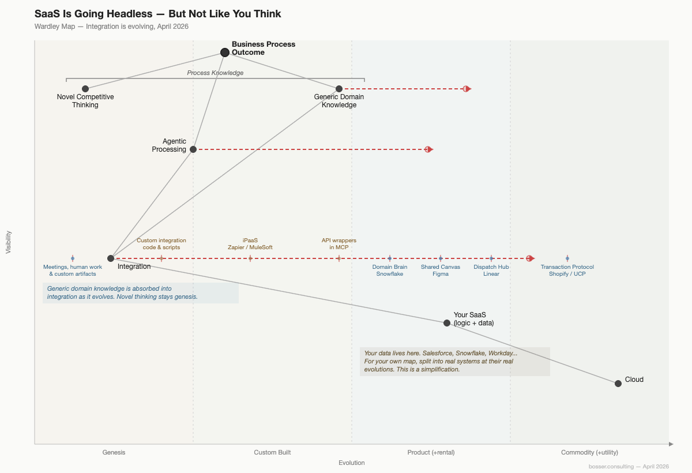

Antti Tevanlinna, Bosser
SaaS Is Going Headless — But Not Like You Think
SaaS is dead. Stocks on decline. Everyone making their own business systems. I'm one of those rooting for a revolution. The more I think, death is not what I see. Headless (not death) is what we need.
Headless means "without user interface". In the SaaS we are used to the user interface is a web site that you conveniently use with your browser. Salesforce.com or any other dot-com. Strip the UI, expose the actual business logic endpoints, let agents use the raw business logic. The headless CMS started the headless movement few years ago. Then came the headless eCommerce playbook. These were for composing your own site from building blocks. Now the same headless evolution gets rerun for the agent era.
The first wave of agent integrations were just API wrappers with a new hat. The Jira/Atlassian MCP is a great example of this. Just REST endpoints repackaged. The agent still had to know custom data model, custom query language, your edge cases. That was the old "headless" — same pipes, different label. You built the whole system.
That was three months ago. What's shipping now is fundamentally different.
The question is no longer whether agents will talk to SaaS tools. The question is how the agents delegate, at what granularity, and who does the thinking. That's up for grabs right now. The protocol debate — MCP, CLI, API — is premature.
The delegation pattern is what matters. Let me expand.
What it replaces
Think about what connects your SaaS tools today. Think about how your whole business system is put together to create eventual outcomes.
If you're following the enterprise integration patterns, you have integration platforms. Zapier, Workato, MuleSoft, Power Automate. Entire teams maintaining connector configs, mapping fields, handling auth tokens.
If you're a software house: custom-built software for integration, custom scripts, cron jobs, internal APIs.
If you're everyone else: people. Copy-paste between tabs. Export CSV, massage it, import to the next system. Have meetings so that the person who knows what's in one system can tell the person who needs it in another. This human work comes with ticketing, processes and similar coordination efforts. The human is the middleware.
All of these — the iPaaS, the scripts, the person moving data between systems — are tackling the same problem. Most SaaS tools don't talk to each other out of the box, so something has to sit in between. Something has to glue these together. Something has to force your SaaS-systems to work in concert as needed by your business outcome.
Four companies just showed four different ways to rethink integration
Pattern 1: The Domain Agent
Snowflake didn't expose an API wrapper. They shipped a specialist AI agent — Cortex Code — trained on their entire technical stack. Metadata views, dynamic tables, Cortex Search semantics.
When Claude Code hits a Snowflake problem, it doesn't call an API. It delegates to something like a colleague agent who knows Snowflake better than it does. Two specialists, one conversation.
What used to be meetings, tickets or custom code is now agent-to-agent conversation. Question: what is the protocol of this conversation?
Had to look this up: It's Claude Code's subagent protocol. Cortex Code runs in headless mode via --input-format stream-json. Claude Code sends structured requests, Cortex Code streams back results. It's not MCP. It's not A2A. It's a proprietary CLI-based delegation — one agent invoking another agent's CLI in programmatic mode.
The SaaS vendor shipped a colleague, not a connector.
Pattern 2: The Shared Canvas
Figma built Code to Canvas. Claude Code builds UI, pushes to Figma as editable native Figma layers. Designer then refines. Pull changes back to code. Keep iterating.
Originally the intended flow was: Design in Figma, replicate in code. In the new model, none of the sides of the integration is read-only. Neither is write-only. A two-way loop where agent and human are peers on the two surfaces.
The SaaS vendor became a collaboration surface, not a data source. Agents collaborating on the surface.
Figma's protocol is MCP. The Figma MCP server is what Claude Code talks to. But the interesting part — the Code to Canvas bit where a rendered UI gets reconstructed as native Figma layers — that's Figma's AI doing the translation, not MCP. MCP handles the read/write. The magic stays with Figma's proprietary layer.
Pattern 3: The Dispatch Hub
Linear's CEO declared issue tracking dead. Coding agents are in 75% of their enterprise workspaces. Agent-driven work up 5x in three months.
Linear doesn't track what humans do anymore. It assigns work to Cursor, Claude Code, etc — and monitors execution. The project management tool became an agent orchestrator.
The SaaS vendor became the control plane, not the tracking layer.
In this case, it was the Claude Code who became headless. Linear still retains its head. I hazard a guess the head is worth a lot in the strategic race.
This means "headless" isn't a property of SaaS. It's a property of whichever side of the integration has less strategic value. Snowflake's UI was never the value — the data and domain knowledge was. So Snowflake goes headless comfortably. But Linear's UI IS the strategic asset — the place where humans see, steer, and decide. Linear keeps its head and makes the agents lose theirs.
Good play I think.
Pattern 4: The Transaction Protocol
Shopify shipped four MCP servers — dev, storefront, catalog, checkout. Every Shopify "Hydrogen" storefront can now expose an agent-ready endpoint with zero custom setup.
Then Shopify went further. Shopify and Google co-developed the Universal Commerce Protocol — a standard for the full commerce journey from discovery to purchase to order management. Endorsed by Etsy, Walmart, Target, Stripe, Visa, Mastercard, Zalando. Twenty-plus companies agreed on how agents buy things. The SaaS vendor became infrastructure agents transact through, not a storefront humans browse.
Standardisation is a play for commodization as well as ease of building on top. Shopify makes it easier for everyone to build stores. They of course get to stay in the value chain and get their fair share. Shopify is deliberately pushing the commerce layer toward commodity. Make it commodity, make it easy, make it standard — and sit in the value chain collecting rent. Classic "commoditise the complement."
This is the strongest ending of the four patterns because it shows the endgame. The others are evolving. Shopify feels like already playing the position.
What's actually evolving on the landscape
A Wardley map can be used to illustrate the shifts in the value chain. Wardley maps in short show how elements in the value chain evolve over time. Here's the general map I see of agentic processing.

Two things are moving at the same time.
Integration is evolving from genesis and custom to product and commodity — from meetings and manual work, through scripts and iPaaS, through API wrappers, toward intent-native patterns and protocols. The four examples above are the frontier of that evolution.
I'm deliberately lumping together all integrations. Your actual landscape will be much more complex.
The general story however is that we are de-humanising and de-customing integration between SaaS systems. Agents and agent patterns from actual products will replace what we weave together meticulously in house. See the 4 patterns above. See how Claude Code can just start attempting to handle a business process once it has been given the connectors to SaaS systems.
Process knowledge is splitting. Generic domain knowledge — how Snowflake queries work, how commerce flows, how sprint planning works — is being absorbed into the integration layer as it matures. Snowflake's domain brain already ate it. Shopify's protocol already encoded it. But novel competitive thinking — which processes to automate, what your customers need, where to place the bet — stays genesis. Always. No protocol absorbs judgment nor your differentiated opinion. Your own business hypothesis stays genesis.
Your next great ideas are always genesis. But you compose them with agents. Agents in turn compose with headless business building blocks.
Agentic processing itself is evolving. Today you build your own agents by hand with Claude Code and LangChain. Tomorrow you use someone else's agents and skills off the shelf. Today is custom-built. Tomorrow is product.
Your data lives inside these SaaS systems — Salesforce, Snowflake, Workday. Integration determines how agents reach it. For your own strategy, split "your SaaS" into the real systems at their real evolutionary positions. This picture with single SaaS node is a simplification.
What tech leaders should take from this
None of these mentioned companies went "headless" in the old sense of headless. None of the mentioned systems stripped the UI and exposed endpoints. Each one found a different answer to the same question: what is our product's role when the primary user is an agent, not a person or a classic integration?
- Snowflake: the domain expert you delegate to
- Figma: the workspace where human and agent iterate together
- Linear: the dispatcher that assigns work to agents
- Shopify: the protocol agents transact through
The delegation style and granularity are different in each case. Two are actually leveraging MCP. Two are not. There is no single "right" architecture. But there is a clear wrong one: doing nothing and hoping the API wrapper is enough.
Three classes are forming fast:
- Redefined their role — Snowflake, Figma, Linear, Shopify. Agent as peer, not consumer.
- Shipping wrappers — API in MCP clothing. Functional. Agent does all the thinking.
- Will be dragged — Legacy UI-first SaaS. Computer Use as the ugly bridge.
Finally: let's talk about the knowledge. The step between tier 1 and tier 2 is where the meetings should disappear. A system with wrapper MCPs still needs someone — human or agent — who understands both systems. A domain brain, a shared canvas, a dispatch hub — these understand themselves.
Your integration team, your Zapier configs, your Monday morning sync where finance explains the numbers to product — all of it exists because your tools can't participate in coordination. When they can, that layer dissolves.
The SaaS vendors will get there. Nobody rebuilds commodity from scratch — that's why Jira won ticket tracking. But Jira's value is tracking work status. Its head and web UI? That's the friction for your agents. We've yet not found the right way to put work tracking into an agentic commodity. Linear is trying. Nobody has won.
The world is not even half ready for agents and agentic.
This closes nicely to "protocol debate is premature". The most sophisticated integration pattern in the article doesn't use MCP at all. It uses stdin/stdout. The pattern matters, not the pipe.
Antti Tevanlinna builds agent competence for companies navigating the agentic transformation. Trained 200+ people at F-Secure, Neste, and Posti.
agents102.bosser.consulting